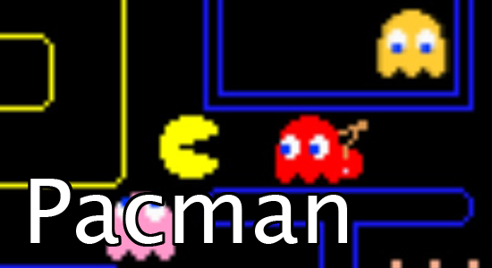

Pacman
Gracz kieruje żółtą kulką – tytułowym Pac-Manem − poprzez labirynt pełen białych kulek. Warunkiem przejścia do następnego poziomu jest zjedzenie ich wszystkich. Ponadto należy unikać czterech duszków (różowego – Pinky, błękitnego – Inky, czerwonego – Blinky i pomarańczowego – Clyde), które poruszają się w pozornie losowych kierunkach po całej planszy. Trafienie na duszka oznacza utratę jednego życia. Na planszy są także 4 większe kulki, które na krótki czas odstraszają przeciwników i pozwalają na ich zjedzenie. Zjedzenie ducha oznacza dodatkowe punkty, a im więcej duchów zjemy za pomocą jednego "wzmacniacza" tym więcej punktów otrzymujemy. Ze zjedzonych duszków zostają same oczy, które wracają do domku w centrum planszy, gdzie się regenerują. Na planszy pojawiają się też specjalne symbole (zwykle owoce), za zjedzenie których przyznawana jest dodatkowa premia punktowa. Na ekranie znajduje się też specjalny tunel, który łączy dwa brzegi planszy (wchodząc z jednej strony wychodzimy z drugiej). Duchy również mogą korzystać z tunelu, lecz poruszają się w nim prawie dwukrotnie wolniej, co daje Pac-Manowi znaczną przewagę.
Pomimo faktu, że każdy kolejny poziom rozgrywa się na identycznej planszy, poszczególne poziomy różnią się poziomem trudności. Zmieniać się mogą szybkość Pac-Mana i duchów, rodzaj bonusowego symbolu, taktyka wypuszczania duchów z ich domku czy długość trwania okresu "przerażenia" po zjedzeniu wzmacniacza. Na wyższych poziomach wzmacniacz działa tak krótko, że duchów nie można już zjadać (wciąż jednak zmieniają one kierunek po zjedzeniu dopalacza). Ponadto wszystkie poziomy (poza poziomem 256, patrz niżej) zaczynając od 21 są identyczne.
Graj